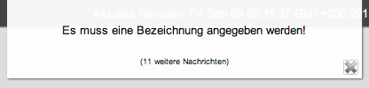
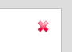
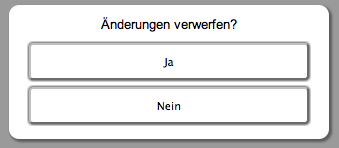

Handhabungsdetails
Im Umgang mit der Anwendung werden Sie an vielen Stellen auf so genannte "Toast-Messages" stoßen. Hierbei handelt es sich um kurze Statusmitteilungen welche am oberen Fensterrand dargestellt werden.

Zum Schließen von Anwendungsteilen, Toast-Messages und Popup-Fenstern werden an vielen Stellen die aus anderen Systemen (vgl. Microsoft Windows) bekannten roten Kreuze bereitgestellt.

Im Umgang mit der Anwendung müssen Sie sich keine Sorgen über eventuellen Datenverlust machen. Falls Sie einen Eingabedialog unbeabsichtigt ohne Speicherung der Änderungen verlassen, fordert Sie eine Sicherheitsabfrage zum Speichern der eingegebenen Daten auf. Diese Abfrage wird außerdem beim Abbruch des Eingabedialogs eingeblendet.

Created with the Personal Edition of HelpNDoc: Free HTML Help documentation generator